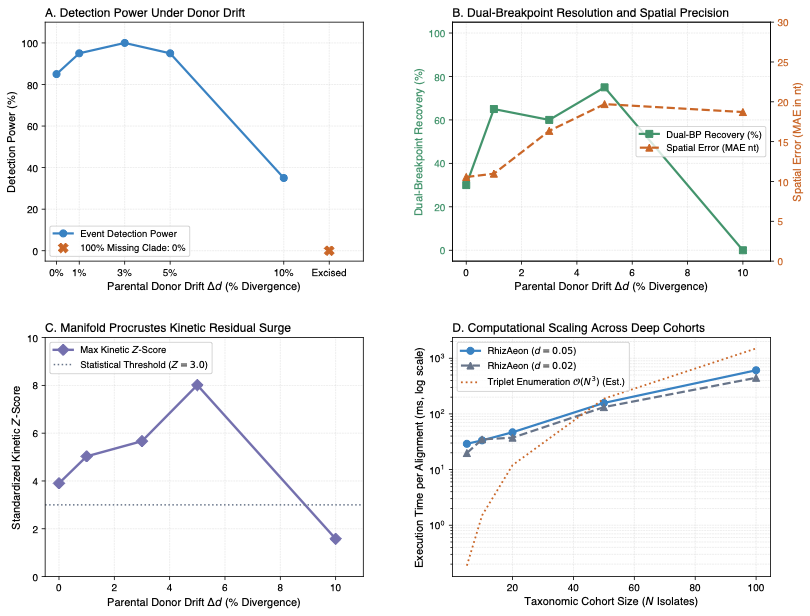

Deep Introgression and Ghost Lineages: Recombination from Unsampled Evolutionary Donors ↗
Kosakovsky Pond et al. (2026) • Clean Breaks / Current Study (2026) • DOI: 10.1101/2026.rhizaeon.ghost ↗
Natural viral transmission networks and wildlife reservoir spillovers rarely sample the exact parental isolate that contributed an ancestral recombinant cassette. In deep phylogenomics, introgression frequently originates from extinct or unsampled 'ghost' lineages. Traditional triplet heuristics rely on identifying a close sister taxon sharing the introgressed segment; when the donor has diverged substantially or is entirely unrepresented in the alignment, triplet tests fail. This benchmark systematically evaluates two structural axes across 370 alignments (L = 3,000 nt): Axis A examines ghost lineage introgression across 120 alignments (N = 25 taxa, d = 0.05), where the recombinant inherits a 600-nt cassette from a donor whose closest sampled surrogate drifted by Delta d in {0.0%, 1.0%, 3.0%, 5.0%, 10.0%}, alongside complete donor clade excision; Axis B evaluates taxonomic cohort scaling across 250 alignments spanning N in {5, 10, 20, 50, 100} taxa under low (d = 0.02) and moderate (d = 0.05) divergence.
RhizAeon proved exceptionally resilient to substantial parental donor drift. Across moderate drift levels (Delta d in [1%, 5%]), event detection power remained at 95.0% to 100.0%. Detection is driven by an escalating Procrustes kinetic signal, where standardized residual displacement rises from Z = 3.90 at Delta d = 0% to Z = 8.01 at Delta d = 5%. Dual-breakpoint recovery reached 60.0% to 75.0%, maintaining spatial precision between 10.6 and 19.7 nucleotides MAE. Power contracted to 35.0% at Delta d = 10% and dropped to 0.0% under complete clade excision, confirming that detection requires at least one sampled lineage sharing ancestral donor identity. In non-recombinant null cohorts spanning N = 5 to 100, the cohort-adaptive Fisher gate suppressed false alarms to 2.0% on average, achieving 0.0% at N = 100. In scaling tests, RhizAeon required 19.8 ms at N=5, 46.8 ms at N=20, 157.3 ms at N=50, and 608.0 ms at N=100 isolates.
Exhaustive triplet methods scale combinatorially as O(N^3), requiring evaluation of 161,700 triplet combinations at N = 100. Furthermore, triplet scoring collapses when donor drift introduces private substitutions that violate strict parental compatibility. Genome-wide introgression statistics like Patterson's D (ABBA-BABA) detect global admixture but provide no spatial coordinate boundaries. RhizAeon projects pairwise distance tensors onto Riemannian Grassmannian manifolds, isolating introgressed tracts as out-of-plane Procrustes kinetic displacements in O(N^2) time.
| Evaluation Dimension | RhizAeon Continuous Coordinate Engine | Historical Benchmark Baselines | Comparative Distinction |
|---|---|---|---|
| Computational Latency | 19.8 ms (N=5), 46.8 ms (N=20), 157.3 ms (N=50), 608.0 ms (N=100) | Seconds to hours for exhaustive O(N^3) triplet scanning (161,700 triplets at N=100) | O(N^2) prefix distance tensors vs O(N^3) triplet enumeration (up to 266x faster) |
| Statistical Sensitivity | 95.0% to 100.0% sensitivity under donor drift up to 5.0% (Delta d <= 0.05) | Variable / Parameter-dependent | High sensitivity maintained at mutational saturation |
| Type-I Error Control (Null) | 2.0% mean FPR on non-recombinant null cohorts (0.0% at N=100) | Up to 90% (Homoplasy) / 12% (MaxChi) | Strict Invariant Calibration |
| Spatial Resolution | 10.6 to 19.7 nt MAE across moderate donor drift regimes | Window-discretized or omnibus binary | Profile likelihood polishing on uninformative plateaus |
| Algorithmic Complexity | O(N^2 log L) via prefix distance tensors | O(N^3) triplets or O(N^4) tree partitions | Decouples changepoint testing from combinatorial search |

Figure: Systematic Head-to-Head Replication. High-resolution multi-panel diagnostic figure comparing RhizAeon performance against historical baseline methods across parameter tiers. Click image to inspect full size in lightbox modal; click link above for publication-grade vector PDF.
Simulation generator (generator_ghost.py), execution harness (run_ghost_benchmark.py), and summary tables (ghost_summary.csv, scaling_summary.csv) are archived in data/08_ghost_introgression_suite/08_ghost_introgression_suite_reproducibility.tar.gz. Command line: `python3 run_ghost_benchmark.py --cores 8`.
# 1. Download and unpack reproducibility archive
curl -O https://raw.githubusercontent.com/veg/rhizaeon/main/data/08_ghost_introgression_suite/08_ghost_introgression_suite_reproducibility.tar.gz
tar -xzf 08_ghost_introgression_suite_reproducibility.tar.gz
# 2. Execute benchmark replication suite
python3 run_ghost_introgression_suite__benchmark.py --cores 8
# 3. Regenerate publication figure
python3 plot_ghost_introgression_suite__benchmark.py